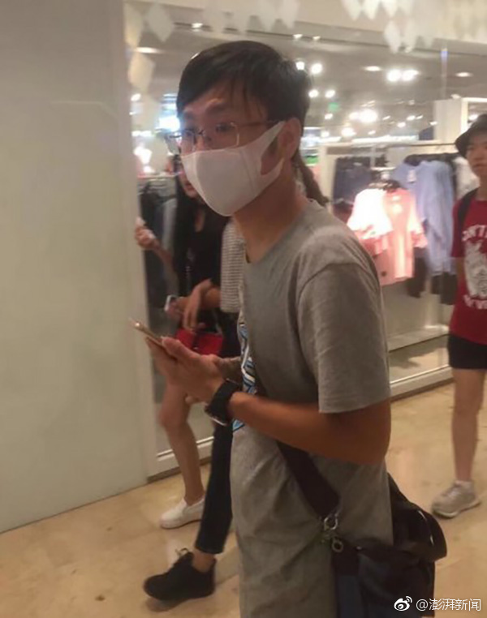

哈哈哈哈哈哈哈哈。太NB了。还有没有王法了……@互联网的那点事:【贾跃亭姐弟已收回对乐视网全部借款】乐视网上半年年报显示，贾跃亭贾跃芳姐弟之前套现时承诺借给乐视网的无息借款总计74亿，然而最高峰时贾氏姐弟借给乐视网不超过30亿，2016年底，只剩下4亿多，到了2017年6月30日竟已全部抽走。
“身上的味道是喷洒了大量劣质香水”。扎心了。@澎湃新闻:【南京地铁一“口罩男”以拍照为由强行搂抱女生，已被警方控制】8月28日、29日，有众多网友在微博中称，在南京新街口地下通道，有一位戴口罩的男子，以拍照为由，占女生便宜。更有网友反映此男子身上还有奇怪的味道，闻着有点头晕。8月29日，南京地铁警方回应称，目前该男子已被警方控制，他本人供述抱女孩的目的是在旅途中，希望留个纪念。经初步调查，其身上的味道是喷洒了大量劣质香水。现代快报南京地铁一“口罩男”以拍照为由强行搂抱女生，已被警方控制
“他不止一次明确表态，乐视是扎根中国的民族品牌，他是土生土长的中国企业家，他本人永远都是中国人。”其实我认为吧，人的信用很重要。“下周回国”言犹在耳呢。---:抱歉，作者已设置仅展示半年内微博，此微博已不可见。